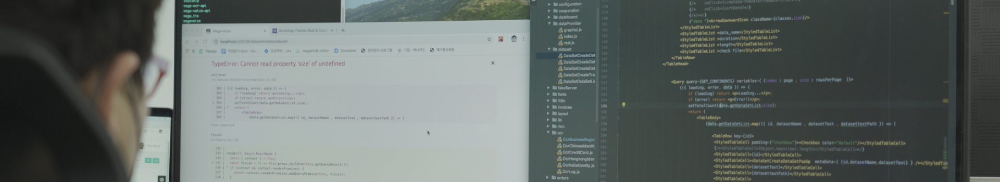
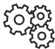

기술과 서비스
전략 컨설팅
기업의 비즈니스
성장을 돕는
메가존.디지털의
컨설팅 전략
신규 비즈니스 모델 및
컨셉 개발
컨테이너, 오케스트레이션, API, 라우팅,
보안, 관리 및 자동화 소프트웨어 등 기업의
클라우드 전환에 필요한 모든 기술 스택에
대한 전문 서비스
보안, 관리 및 자동화 소프트웨어 등 기업의
클라우드 전환에 필요한 모든 기술 스택에
대한 전문 서비스
MSA (MicroService Achitecture)
서비스 분리 및 경량화,
Outer Architecture 설계, 분산 트랜젝션
관리, 장애 추적 및 테스트 등 비즈니스
도메인과 시스템 아키텍쳐를 아우르는 전문 기술
Outer Architecture 설계, 분산 트랜젝션
관리, 장애 추적 및 테스트 등 비즈니스
도메인과 시스템 아키텍쳐를 아우르는 전문 기술

DevOps & Security
어플리케이션과 서비스를 빠른 속도로
제공할 수 있도록 기업의 문화와 프로세스를
개선하고, CI/CD, 마이크로 서비스, 모니터링,
커뮤니케이션 및 협업 도구 등 기술 자동화를 지원
제공할 수 있도록 기업의 문화와 프로세스를
개선하고, CI/CD, 마이크로 서비스, 모니터링,
커뮤니케이션 및 협업 도구 등 기술 자동화를 지원
데이터 분석 및 시각화
데이터를 전사적인 관점에서 조망하고
체계적, 구조적으로 관리하기 위해 Data Principle,
Data Governance, DA Framework를 설계
체계적, 구조적으로 관리하기 위해 Data Principle,
Data Governance, DA Framework를 설계

UI / UX 설계
모바일/웹표준과 웹/앱 접근성을 준수하고
사용자 중심의 최신 트랜드를 반영한
UI/UX 설계
사용자 중심의 최신 트랜드를 반영한
UI/UX 설계
데이터 분석 및 시각화
Tableau, GA 등 데이터 분석 및 시각화 도구 지원,
기업의 효율적인 데이터 활용과 Business
Intelligence를 위한 고급 분석 환경 구성
기업의 효율적인 데이터 활용과 Business
Intelligence를 위한 고급 분석 환경 구성
AI & ML
AI 서비스 기반의 분석과 예측을 통해 기업 경쟁력을
제고하고, MLOps환경을 구성하여 기업이 쉽게
AI서비스를 활용할 수 있도록 지원
제고하고, MLOps환경을 구성하여 기업이 쉽게
AI서비스를 활용할 수 있도록 지원

서비스 엔지니어링
서비스 요건 분석, Service Blueprint 및 Workflow
설계 등 비즈니스 목표 달성을 위한 최적의 서비스
설계 지원
설계 등 비즈니스 목표 달성을 위한 최적의 서비스
설계 지원

융합기술
메타버스, VR/AR, IOT등 IT 신기술 융합을 통한
새로운 서비스 제공
새로운 서비스 제공
SI (System Integration)
Cloud, 빅데이터, 인공지능 등 인텔리전스 기술로
고객 비즈니스의 가치 창출을 위한 서비스 제공
고객 비즈니스의 가치 창출을 위한 서비스 제공
SM (System Management)
대규모 운영 사업 경험을 바탕으로 SLA, ALM, DevOps 등 사업에 맞는 특화된 서비스 제공
레퍼런스
LG U+ 미디어플랫폼
DevOps 체계도입 및 MSA
비즈니스의 민첩성을 확보하고 시스템의 품질을 높이며, 코드 유지보수성을
향상시키는 것을 목표로 MSA로 전면 전환과 DevOps 체계를 도입하는 프로젝트
메가존 디지털 서비스 플랫폼을 통한 기술 노하우 제공
